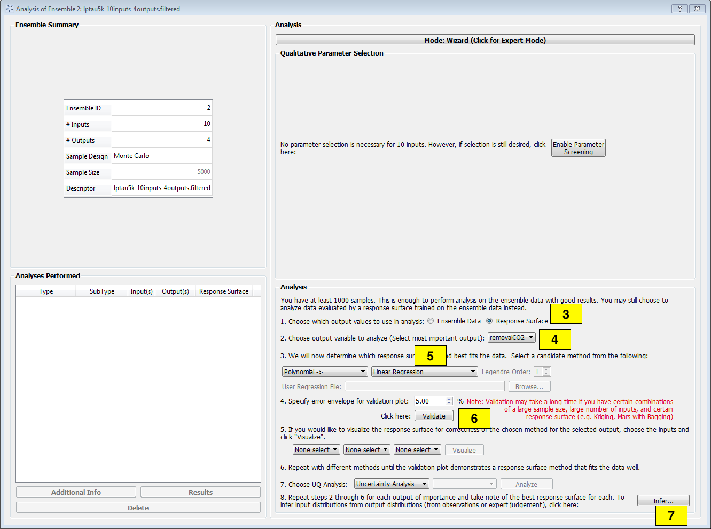
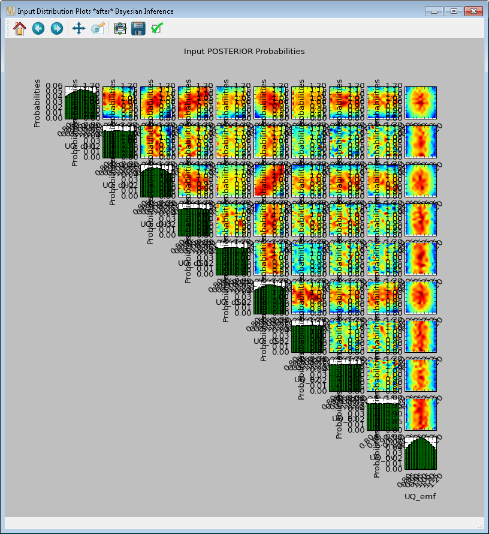
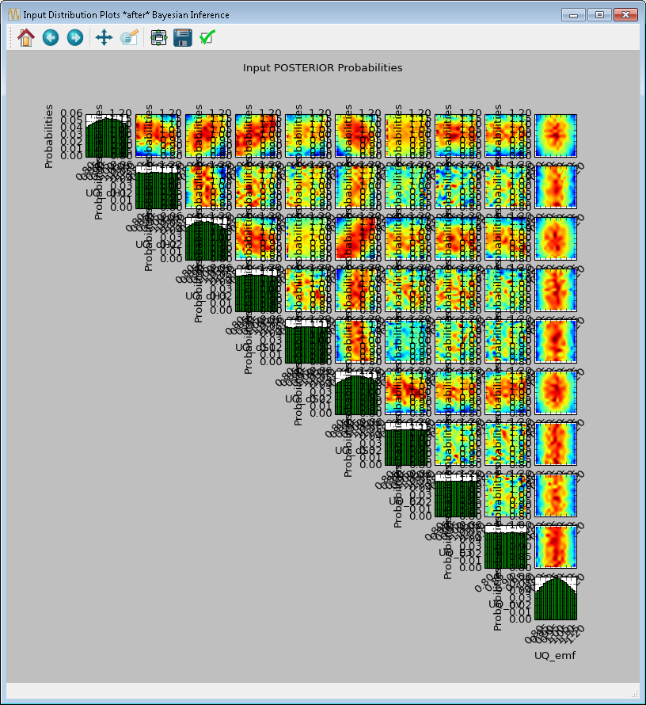
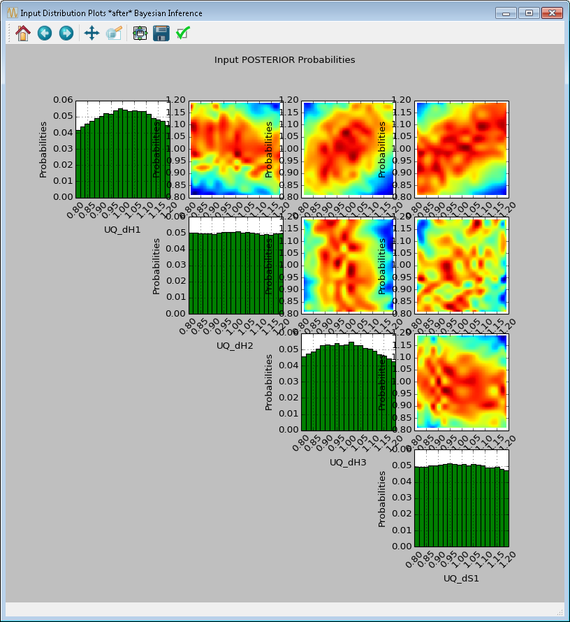
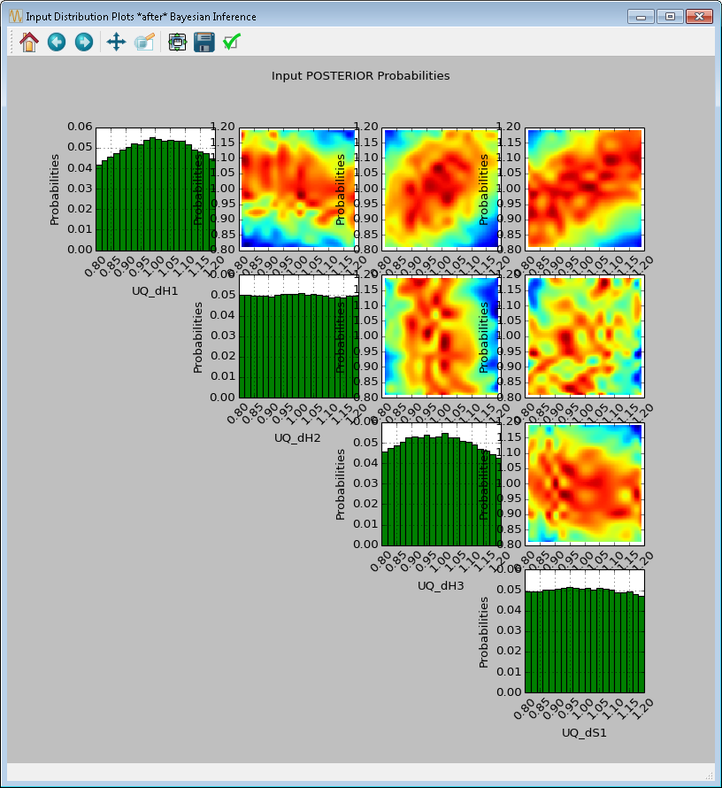

Bayesian Inference¶
For each output variable, the user specifies an observed value (from physical experiments) with the associated uncertainties (in the form of standard deviation), if applicable. Whether standard inference or SolventFit is selected, the tool will launch a Markov Chain Monte Carlo (MCMC) algorithm to compute the posterior distributions of the uncertain input parameters. These input posterior distributions represent a refined hypothesis about the input uncertainties in light of what was previously known (in the form of input prior distributions) and what was observed currently (in the form of noisy outputs).
Load the file “lptau5k_10inputs_4outputs.filtered” from the examplesUQ folder.
Click Analyze for the current ensemble and a new dialog box displays (Figure [fig:uqt_analysis_infer]).
Analysis Dialog, Bayesian Inference
[fig:uqt_analysis_infer]
Select “Response Surface” in the “Analysis” section.
Select “Output variable to analyze” to be “removalCO2.”
Select “Linear Regression” as the response surface.
Insert 5.00 as the error envelope for the validation plot. Click Validate. The GUI allows the user to proceed with Bayesian inference after one input has been validated; however, the user may want to validate all outputs since they are all used in the inference.
Once validation is completed, click Infer at the lower right corner, which displays a new dialog box (Figure[fig:uqt_infer]).
In the Output Settings table (on the left), select the second, third, and fourth outputs as the observed outputs. The user can experiment with using different response surface models (for example, linear polynomials) to approximate the mapping from inputs to each of the outputs.
In the Input Settings table (on the right), designate input types (variable, design, or fixed) and if necessary, switch to Expert Mode to revise the prior distribution on the input parameters. The prior distribution represents knowledge that the user possesses about the inputs before observational data (from experiments) has been incorporated into this knowledge. If the user does not have any updated knowledge about the simulation ensemble, it is OK to leave the table as is.
In the Observations table (in the middle), select the number of experiments from which the user can get observational data. In essence, if the user has \(N\) observations, then \(N\) should be set as the number of experiments. The table will then populate columns for design inputs (if any) and observed outputs. Currently, only normal distribution is supported as the noise model for observations. Enter the mean and standard deviation for each of these observations. For convenience, the mean and standard deviation values are prepopulated with the results from uncertainty analysis. These values have been provided as a sanity check for the user, in case the observation for a particular output is way out of range from these distributions.

Bayesian Inference Dialog for Standard Inference
[fig:uqt_infer]
To save an input sample drawn from the posterior distribution, select the Save Posterior Input Samples to File checkbox and select a location and file name to store the sample.
Click Infer to start the analysis. Inference can take a long time; thus, a stop feature has been implemented. Once inference starts, the Infer button changes to Stop. To stop inference calculations, click Stop which changes the button back to Infer, allowing the user to restart the calculations from scratch. If inference is allowed to run its course, its results are interpolated to produce heat maps (off-diagonal subplots in Figure[fig:uqt_infer_results]) for visualization. This interpolation step can take a few minutes and while it is running, Infer is disabled.
 

[fig:uqt_infer_results]
Once the inference and interpolation steps are complete, two windows will be displayed: a multi-plot figure of the prior distributions and another multi-plot figure of the posterior distributions. If the user has selected the Save Posterior Input Samples to File checkbox, then a sample file will also be written to the designated file location.
In the resulting prior and posterior plots (Figure [fig:uqt_infer_results]), the univariate input distributions are displayed as histograms on the diagonal. The bivariate input distributions (between pairs of inputs) are displayed as heat maps in the off-diagonal subplots. On these heat maps, the regions in red reflect the input space with higher probability. In the posterior plots, the red regions represent inputs that are more likely to have generated the specified observations on the outputs. By comparing the prior and the posterior figures, the user can see the ”before” and ”after” impact of inference on our knowledge of the input uncertainty.
To zoom in on any one of the subplots, left-click; to zoom out, right-click. To display a subset of these subplots, clear the checkbox for the inputs to be omitted (from the first column of the Input Prior Table) and click Replot (Figure [fig:uqt_infer_replot_results]).
 

[fig:uqt_infer_replot_results]